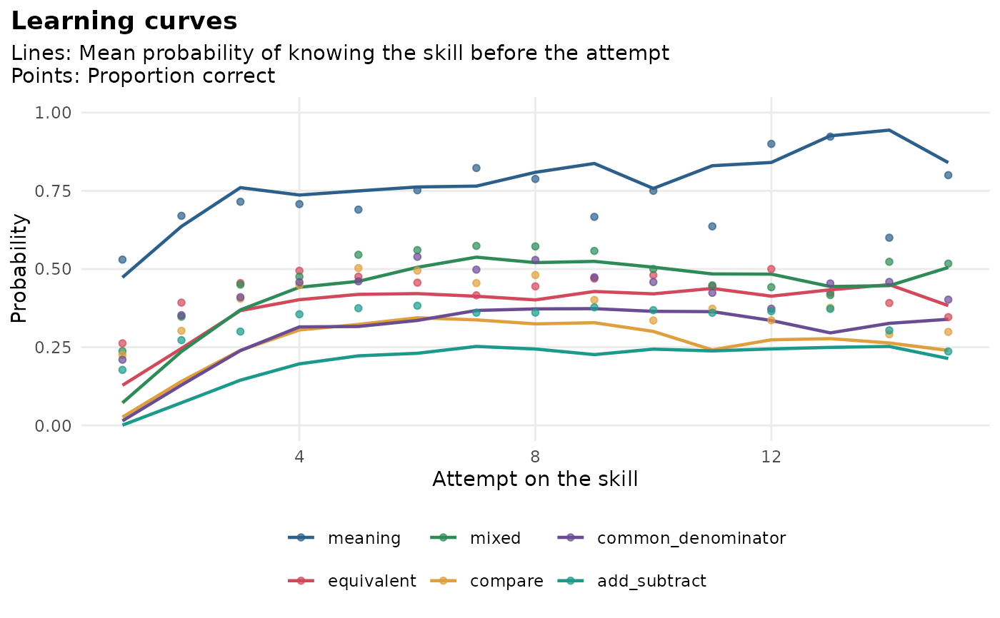

Experimental. Fits a Bayesian knowledge tracing (BKT) model to practice logs: Each skill is either known or not known, a student who does not know a skill can learn it after each attempt, and the answers are noisy signals of the hidden state. Where IRT measures ability at one point in time, BKT follows each student's mastery of each skill from one attempt to the next.
Usage
mv_kt_fit(
data,
kg = NULL,
student = "student",
item = "item",
skill = "skill",
correct = "correct",
order = NULL,
skills = NULL,
forgets = FALSE,
multigs = FALSE,
starts = 3,
max_iter = 500,
tol = 1e-06,
seed = NULL
)Arguments
- data
practice logs in long format: One row per attempt, with a student id, an item id, the skill (or a knowledge graph in
kg) and the answer (1 = correct, 0 = wrong).- kg
optional knowledge graph (
mv_kg_build()) whose item links give the skill of each item; used whendatahas no skill column.- student, item, skill, correct
names of the columns of
data.itemis only needed withkgormultigs = TRUE.- order
optional name of a column (a time, or an attempt number) that orders each student's attempts; by default the row order is used.
- skills
optional skills to fit (default: All).
- forgets
logical; let a known skill be forgotten (a
forgetparameter per skill).- multigs
logical; a guess and a slip per item instead of per skill.
- starts
number of starting values per skill; the solution with the highest log-likelihood is kept.
- max_iter, tol
maximum EM iterations and the convergence tolerance on the log-likelihood.
- seed
optional random seed for the starting values.
Value
An mv_kt object: A list with params (one row per skill),
items (per-item guess and slip with multigs = TRUE), trace (one
row per attempt, with the predicted probability of a correct answer and
the probability that the skill is known before and after the attempt),
kg and settings. Use tidy(), glance(),
predict(), mv_kt_cv() and gg_kt().
Details
Each skill has four parameters (Corbett & Anderson, 1995): prior, the
probability of knowing the skill before the first attempt; learn, the
probability of moving from not known to known after an attempt; guess,
the probability of a correct answer without knowing the skill; and
slip, the probability of a wrong answer while knowing it. The model is
fitted by expectation-maximization (the Baum-Welch algorithm) for each
skill separately, from several starting values. Two variants follow the
pyBKT library (Badrinath et al., 2021; Bulut et al., 2023): forgets = TRUE lets a known skill be forgotten, and multigs = TRUE gives every
item its own guess and slip (the item difficulty effect model, KT-IDEM;
Pardos & Heffernan, 2011).
With a knowledge graph, items are mapped to skills through the graph's
item links; an item linked to several concepts counts as an attempt on
each of them. gg_kt() then draws mastery on the graph.
References
Badrinath, A., Wang, F., & Pardos, Z. (2021). pyBKT: An accessible Python library of Bayesian knowledge tracing models. In Proceedings of the 14th International Conference on Educational Data Mining (pp. 468-474).
Bulut, O., Shin, J., Yildirim-Erbasli, S. N., Gorgun, G., & Pardos, Z. A. (2023). An introduction to Bayesian knowledge tracing with pyBKT. Psych, 5(3), 770-786. doi:10.3390/psych5030050
Corbett, A. T., & Anderson, J. R. (1995). Knowledge tracing: Modeling the acquisition of procedural knowledge. User Modeling and User-Adapted Interaction, 4(4), 253-278.
Pardos, Z. A., & Heffernan, N. T. (2011). KT-IDEM: Introducing item difficulty to the knowledge tracing model. In User Modeling, Adaption and Personalization (pp. 243-254). Springer.
See also
cognitive_tutor and fractions_logs for example data.
Examples
kt <- mv_kt_fit(cognitive_tutor, student = "student", skill = "skill",
correct = "correct", skills = c("Plot pi", "Plot whole number"))
kt
#> <mv_kt> (EXPERIMENTAL) Bayesian knowledge tracing
#> 2 skill(s), 256 student(s), 1007 attempt(s)
#> skill prior learn guess slip
#> Plot whole number 0.930 0.449 0.500 0.071
#> Plot pi 0.676 0.624 0.051 0.108
#> Fit on the same logs: RMSE 0.370, accuracy 0.809, AUC 0.718
tidy(kt)
#> # A tibble: 2 × 11
#> skill prior learn forget guess slip n_students n_attempts loglik iterations
#> <chr> <dbl> <dbl> <dbl> <dbl> <dbl> <int> <int> <dbl> <int>
#> 1 Plot… 0.930 0.449 0 0.5 0.0707 256 590 -182. 76
#> 2 Plot… 0.676 0.624 0 0.0512 0.108 253 417 -253. 107
#> # ℹ 1 more variable: converged <lgl>
glance(kt)
#> # A tibble: 1 × 9
#> n_skills n_students n_attempts loglik AIC BIC rmse accuracy auc
#> <int> <int> <int> <dbl> <dbl> <dbl> <dbl> <dbl> <dbl>
#> 1 2 256 1007 -435. 891. 940. 0.370 0.809 0.718
# practice logs on the fractions graph
kt2 <- mv_kt_fit(fractions_logs, kg = fractions_kg)
gg_kt(kt2)
